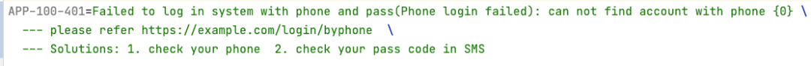
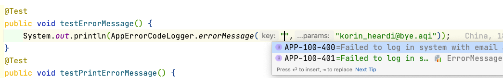
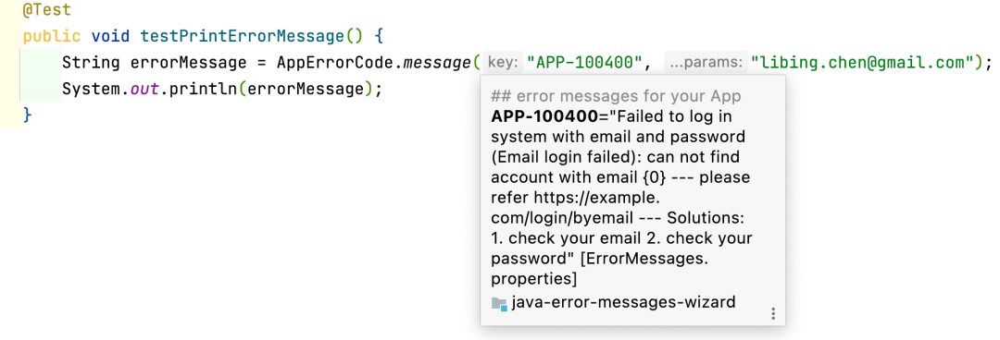
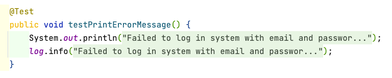
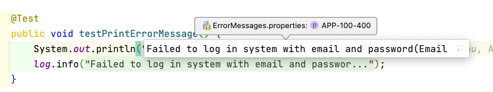
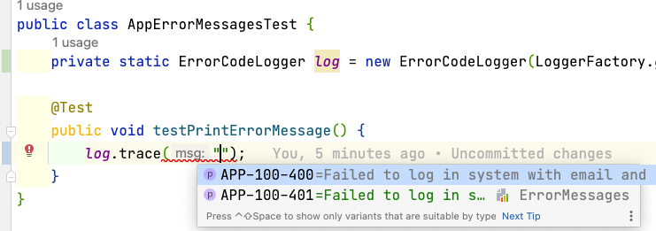
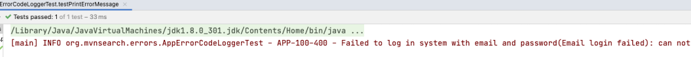

一 什么是好的错误信息(Error Message)?
一个好的Error Message主要包含三个部分：
Context: 什么导致了错误？发生错误的时候代码想做什么？
The error itself: 到底是什么导致了失败？具体的原因和当时的数据是什么？
Mitigation: 有什么解决方案来克服这个错误，也可以理解为 Solutions
听起来还是有点抽象，能否给点代码？ 刚好有一个 jdoctor 的项目，作者来自Oracle Labs[1] 样例代码如下：
1 | ProblemBuilder.newBuilder(TestProblemId.ERROR1, StandardSeverity.ERROR, "Hawaiian pizza") |
这里的Problem理解为Error没有问题，核心主要包括以下几个字段：
context: such as app name, component, status code，使用一个字符串描述当时的上下文，如应用名称 + 组件名称 +具体的错误状态码等，这个由你自己决定，当然JSON字符串也可以，如 {“app”:”uic”, “component”: “login”, “code”:”111”}
description: Long(Short) to describe error 错误描述，有Long和Short两者
because/reason: explain the reason with data 详细解释错误的原因，当然必须包含相应的数据
documentedAt: error link 错误对应的HTTP连接，更详细地介绍该错误
solutions: possible solutions 可能的解决方案，如提示访问者检查email拼写是否正确，短信的Pass Code是否输入正确等。
有了这些具体的字段后，我们理解起来就方便多啦。
二 错误码(Error Code)的设计
各种错误处理上都建议使用错误码，错误码有非常多的优势：唯一性、搜索/统计更方便等，所以我们还是要讨论一下错误码的设计。网上也有不少错误码的设计规范，当然这篇文章也少不了重复造轮子，该设计提供给大家参考，大家自行判断啊，当然也非常欢迎留言指正。
一个错误码通常包含三个部分：
System/App short name: 系统或者应用的名称，如 RST, OSS等。如果你熟悉Jira的话，基本也是这个规范，Java程序员应该都知道HHH和SPR代表什么吧？
Component short name or code: 系统内部的组件名称或者编码，如LOGIN, AUDIT，001 这些都可以，方便更快地定位错误。
Status code: 错误的状态码，这个是一个三位数字的状态码，如200，404，500，主要是借鉴自 HTTP Status Code，毕竟绝大多数开发者都了解HTTP状态码，我们没有必要再重新设计。
有了上述的规范后，让我们看一下典型的错误编码长什么样子：
OSS-001-404: 你应该知道是OSS的某一组件报告资源没有找到吧
RST-002-500：这个是一个组件的内部错误
UIC-LOGIN-404：这个应该是会员登录时查找不到指定的账号
我们采用应用名缩写， 组件名或者编码， 状态值，然后以中划线连接起来。中划线比较方便阅读，下划线有时候在显示的时候理解为空格。同时有了标准的HTTP Status Code支持，不用参考文档，你都能猜一个八九不离十。 错误码设计千万不要太复杂，试图将所有的信息都添加进去，当然信息非常全，但是也增加了开发者理解和使用成本，这个可能要做一个取舍，当然我也不是说目前这种一键三连(打赏、点赞加转发)的结构就最合理，你也可以自行调整。有没有做心里研究的同学来说一下，这种三部分组成的方式，是不是最符合人们的认知习惯？如果超过三部分，如4和5，人们能记住和使用的概率是不是就下降的非常多？
还记得前面说的error的context吗？这里error code其实就是启动context的作用，如 UIC-LOGIN-404，错误发生在哪里？错误码帮你定位啦。当时代码想干什么？错误码也说明啦。虽然说错误码不能完全代表错误的上下文，但是其承载的信息已经足够我们帮我们了解当时的上下文啦，所以这里error code就是起着context的作用。目前看来至少error code要比 ProblemBuilder.newBuilder(TestProblemId.ERROR1, StandardSeverity.ERROR, “Hawaiian pizza”) 中的Hawaiian pizza 作为context更具有说服力，也规范一些。
三 错误消息的编写格式
错误码设计完毕后，我们还不能用错误码+简短消息方式输出错误，不然就出现类似 ORA-00942: table or view does not exist这种情况，你一定会吐槽：”你为何不告诉哪个表或者view？”。所以我们还需要设计一个message格式，能够将错误的context, description, reason, document link, solutions全部包含进来，这样对开发者会比较友好。这里我拟定了一个Message的规范，当然大家可以发表自己的意见啊，如下：
1 | long description(short desc): because/reason --- document link -- solutions |
解释一下：
错误的长描述直接书写，短描述使用括弧进行包含。这种写法在合同中非常常见，如阿里云计算有限公司(阿里云) ，你签署劳动合同时，公司的称谓基本也是全名(代称) 这种方式。好多同学会在错误日志中书写登录失败，但是登录系统中有多种登录方式，所以远不如Failed to log in with email and password(Login Failed), Failed to log in with phone and passcode(Login Failed), Failed to log in with oauth2(Login Failed) 更清晰。
错误具体原因: 接下来是冒号，然后书写详细的原因，如 email user@example.com not found ，gender field is not allowed in package.json 一定要包含具体的数据信息，包括输入的，还是和劳动合同一样，抬头之后就是你的具体岗位和薪水，虽然合同是格式化的，但是每一个人具体的岗位和薪水是不同的，这些参数都是从外部获取的。此处有安全同学发问，如何数据脱敏？这个是另外的问题，大多数开发者应该了解如何进行mask，这里我们就跳过。当出现劳动纠纷这个错误时，具体原因中的数据，如岗位和薪水等，这样劳动仲裁局就可以快速定位并解决该”错误”。
document link: 接下来我们使用三种划线—-进行分隔，输入对应的error link。三划线作为分隔符在很多的场景中多有使用，如mdx, yaml等，大家不会太陌生。 如果没有link那就忽略就可以。
solutions：自然的文本表述即可，能说明清楚就可以，也是放在三中划线后。
看一个具体的消息格式例子：
1 | APP-100-400=Failed to log in system with email and password(Email login failed): can not find account with email {} --- please refer https://example.com/login/byemail --- Solutions: 1. check your email 2. check your password |
上述的APP-100-400的错误码对应的描述基本覆盖到jdoctor中需要的信息，可以说对一个错误的描述应该非常全啦，而且有一定的格式，也方便后续的日志分析。
四 组装和保存错误码 + Message
有了错误码和message的规范，接下来我们应该如何保存这些信息呢？如果是Java，是不是要创建对应的ErrorEnum，然后是一些POJO？这里个人建议使用properties文件来保存错误码和message的信息。文件名可以直接为ErrorMessages.properties，当然是在某一package下，文件样例如下：
1 | ### error messages for your App |
为何要选择properties文件来保存error code和message信息，主要有以下几个原因：
国际化支持：Java的同学都知道，如果你的错误消息想调整为中文，创建一个ErrorMessages-zh_CN.properties 即可。原文中的建议是Don’t localize error messages，但是考虑到国内大多数程序员未必能用英文表达清楚，所以中文也是可以的。题外话：如果中国的程序员都能用英文清晰地阅读文章和表达自己的思想和观点，我们在计算机方面的水平可能会提升到更高的台阶。
各种语言对properties的文件解析都有支持，不只是Java，其他语言也有，而且properties文件本身也不复杂，所以该properties文件可以给Node.js, Rust等其他语言使用，如果是Java enum和POJO基本就不可能啦。
properties文件格式丰富：支持注释，换行符，多行转义等也都没有问题。

最后最关键的是IDE支持非常友好 , 以Java开发者使用的IntelliJ IDEA来说，对Properties文件的支持可以说是到了极致，如下：
- error code的自动提示
 - 快速查看：鼠标移上去就可以，按下CMD鼠标移上去也可以， Alt+Space也可以，当然点击直接定位就更不用说啦。

重构和查找支持：虽然Error Code是字符串，但是也是properties的key，所以rename这个error code，所有引用的地方都会rename。还支持find usage，那些地方引用了该error code等，都非常方便。当然如果Error Code在系统中没有被使用，也会灰色标识。
折叠自动显示功能：当你的代码处于折叠状态时，IDEA直接将message拿过来进行显示，你在code review的时候方便多啦，也便于你理解代码。

- 直接修改message的值

总之IntellIJ IDEA对properties文件的支持到了极致，我们也没有理由不考虑开发者体验的问题，到处跳来跳去地找错误码，这种伤害程序员开发体验的事情不能做。 当然JetBrains的其他IDE，WebStorm等都有对proproperties文件编辑支持。
五 代码实现
看起来功能挺酷炫的，是不是这种方式错误管理要介入一个开发包啊？不需要，你只需要10行代码就搞定，如下：
1 | import org.slf4j.helpers.MessageFormatter; |
这样在任何地方如果你要打印错误消息的时候，这样log.info(AppErrorMessages.message(“APP-100-400”,”xxx”));就可以。如果你还有想法和log进行一下Wrapper，如 log.info(“APP-100-400”,”xxx”); ，也没有问题，样例代码如下：
1 | public class ErrorCodeLogger implements Logger { |
接下来你就可以在log中直接整合error code，非常便捷。上述代码我已经写好，你参考文章末尾的项目地址即可。

最终的日志输出如下：

提醒：这里我们使用了slf4j的MessageFormatter，主要是方便后续的Slf4j的整合，而且slf4j的MessageFormatter比Java的MessageFormat容错和性能上更好一些。
六 FAQ
1 为何选择3位的HTTP Status Code作为Error的Status Code？
大多数开发者对HTTP Status Code都比较熟悉，所以看到这些code就大致明白什么意思，当然对应用开发者也有严格的要求，你千万别将404解释为内部错误，如数据库连接失败这样的，逆正常思维的事情不要做。HTTP status code归类如下，当然你也可以参考一下 HTTP Status Codes Cheat Sheet[2]。
- Informational responses (100–199)
- Successful responses (200–299)
- Redirection messages (300–399)
- Client error responses (400–499)
- Server error responses (500–599)
但是Error Status Code不局限在HTTP Status Code，你也可以参考SMTP， POP3等Status Code，此外你也自行可以选择诸如007，777这样的编码，只要能解释的合理就可以啦。
在日常的生活中，我们会使用一些特殊意义的数字或者和数字谐音，以下是一些友情提醒：
UIC-LOGIN-666: 太顺利啦，完美登录。但是你团队中有欧美老外的话，他可能理解为理解为恶意登录，登录失败
APP-LOGIN-062: 如果你团队有杭州土著的话，不要使用62这个数字
APP-001-013: 如果该error code要透传给最终用户，请不要使用13这个数字，会引发不适
这种有特殊意义的数字或者数字谐音，如520，886，999，95等，如果能使用的恰当非常方便理解或更友好，如透传给用户UIC-REG-200(注册成功)，如果调整为UIC-REG-520可能更温馨一些。总的来说使用这些数字要注意场景，当然比较保险的做法就是参考HTTP，SMTP等设计的status code。
2 properties文件存储error code和message，真的比enum和POJO好吗？
就Java和IntelliJ IDEA的支持来看，目前的配合还是比较好的，如i18n，维护成本等，而且这些ErrorMessages.properties也可以提交到中心仓库进行Error Code集中管理，如果是Java Enum+POJO对i18n和集中管理都比较麻烦，而且代码量也比较大，你从上述的jdoctor的problem builder的就可以看出。当然在不同的语言中也未必是绝对的，如在Rust中，由于enum的特性比较丰富，所以在Rust下使用enum来实现error code可能是比较好的选择。
1 | #[derive(Debug)] |
3 为何不在Error Code中提供错误级别
不少错误码设计中会添加错误级别，如 RS-001-404-9 这样，最后一位表示错误的严重级别。这样做没有问题，但是也要考虑现实因素，如下：
错误的级别会动态调整的：如随着时空的变化，之前非常严重的错误级别，现在并不那么严重啦。如果资源找不到可能之前非常严重，但是现在添加了备份方案，可以从备份服务器中再查找一次，所以这个错误出现在主服务上可能现在就不是那么严重啦。
不同团队对错误级别的认知不一样：如OSS-404在OSS团队的data server上找不到，元信息都是有的，结果在data server上没有找到对应的数据，这个是非常严重的错误。雷卷在业务团队，如负责Serverless Jamstack，其中的一个文件缺失，如html, css, image，可能并不是一个大问题，等一会重试下，不行就再上传一下。我想表达的是同样的错误，在不同团队中的重要性并不一样。
如果将错误的基本固化到error code中，这个后续你就没法调整啦，你如果调整了错误级别，那就是可能就是另外一个错误码，给统计和理解都会造成问题。我个人是建议错误码中不要包括严重级别这些信息，而是通过外围的文档和描述进行说明，当然你也可以通过诸如 log.info , log.error来确定错误的级别。
4 能否提供共享库？
由于IntelliJ IDEA并不支持动态的properties文件名称，如果你用动态的properties文件名称，就不能进行代码提示，查找等功能也都不能使用，所以必须是这种 @PropertyKey(resourceBundle = BUNDLE_FQN) 静态的properties文件名方式。就一个Java类，你就受累Copy一下这个Java类，毕竟是一次性的工作，当然你想个性化调整代码也更方便，如和Log4j 2.x或自定也的logging框架整合也简单些。 日志是项目最基本的需求，所以你创建的项目的时候，就把Error Code对应的代码添加到项目模板中，这样项目创建后就自动包含logging和error code的功能。
5 其他的考量
原文和Reddit上相关的讨论也进行了一些整理和说明：
内外有别：如内部开发者的错误中可能会包括服务器的具体信息，当然给最终消费者，如平台的FaaS开发者，可能就不能输出这样的信息，有一定的安全风险。
小心在错误中暴露敏感数据：输出到错误日志的数据一定要进行mask，当然也不要影响你定位错误，这个要看具体的场景。
不要将错误消息作为 API 契约：在API的场景中，响应错误有两种方式：根据错误码做响应，如REST API；另外一种是根据消息做出响应，如GraphQL，所以这个你自行选择。
Error Code的一致性：错误消息会输出给不同的消费者，如REST API，界面等，可能错误的提示消息有所不同，如国际化、脱敏等，但是最好都是相同的error code，也就是front end + backend 共享相同的error code，方便定位错误和统计。
七 总结
采用error code + 基于properties文件存储error message，这个设计其实就是一个综合的取舍。如果IDEA不能很好地支持properties文件，你看到一个Error Code，不能直接定位到错误的消息，相反还需要跳转来跳转去找对应的消息，那么Enum + POJO可能就是好的选择。此外error code的设计也非常偏向http status code方案，这个也是主要基于大家对HTTP都非常熟悉，基本上就能猜出大概的意思，相反随机编码的数字就没有这方法的优势，要去error code中心再去查找一下，无形中也是浪费开发人员的时间。
1 | 最后项目的Demo地址：http://gitlab.i-c.com//java-error-messages-wizard 正确地址看留言 |

...
...
Copyright 2021 sunfy.top ALL Rights Reserved